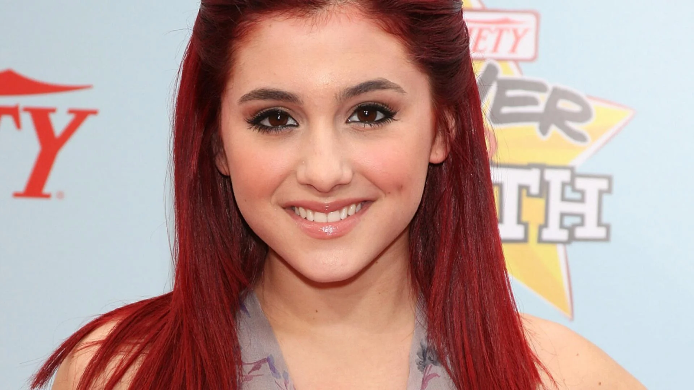
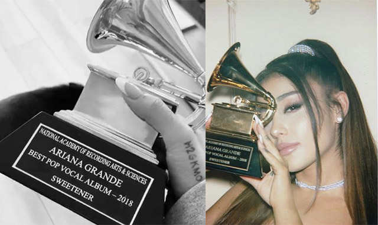

Ariana Grande
A L B U M S
Yours Truly (2013)
- 1. Honeymoon Avenue
- 2. Baby I
- 3. Right There
- 4. Tattooed Heart
- 5. Lovin' It
- 6. Piano
- 7. Daydreamin'
- 8. The Way
- 9. You'll Never Know
- 10. Almost Is Never Enough
- 11. Popular Song
- 12. Better Left Unsaid
My Everything (2015)
- 1. Intro
- 2. Problem
- 3. One Last Time
- 4. Why Try
- 5. Break Free
- 6. Best Mistake
- 7. Be My Baby
- 8. Break Your Heart Right Back
- 9. Love Me Harder
- 10. Just A Little Bit Of Your Heart
- 11. Hand On Me
- 12. My Everything
Dangerous Woman (2016)
- 1. Moonlight
- 2. Dangerous Women
- 3. Be Alright
- 4. Into You
- 5. Side To Side
- 6. Let Me Love You
- 7. Greedy
- 8. Leave Me Lonely
- 9. Everyday
- 10. Sometimes
- 11. I Don't Care
- 12. Bad Decisions
- 13. Touch It
- 14. Knew Better/Forever Boy
- 15. Thinking Bout You
- 16. Step On Up
- 17. Jason's Song(Gave It Away)
Sweetener (2018)
- 1. raindrops (an angel cried)
- 2. blazed (feat. Pharrell Williams)
- 3. the light is coming (feat. Nicki Minaj)
- 4. R.E.M
- 5. God is a woman
- 6. sweetener
- 7. successful
- 8. everytime
- 9. breathin
- 10. no tears left to cry
- 11. borderline (feat. Missy Elliott)
- 12. better off
- 13. goodnight n go
- 14. pete davidson
- 15. get well soon
thank u, next(2019)
- 1. imagine
- 2. needy
- 3. NASA
- 4. bloodline
- 5. fake smile
- 6. bad idea
- 7. make up
- 8. ghostin
- 9. in my head
- 10. 7 rings
- 11. thank u, next
- 12. break up with your girlfriend, i'm bored
Positions (2020)
- 1. shut up
- 2. 34+35
- 3. motive (with Doja Cat)
- 4. just like magic
- 5. off the table (with The Weeknd)
- 6. six thirty
- 7. saftey net (feat. Ty Dolla $ign)
- 8. my hair
- 9. nasty
- 10. west side
- 11. love language
- 12. positions
- 13. obvious
- 14. pov
C A R E E R
Before Fame

Before Ariana Grande became a global pop star, she was a young performer passionate about music and theater.
Born on June 26, 1993, in Boca Raton, Florida, she participated in local theater productions and sang at various events (Britannica, 2024).
At just 15 years old, she landed a role in the Broadway musical 13, which helped her gain industry recognition (Biography, 2024).
Around the same time, she started posting singing videos on YouTube, showcasing her vocal abilities.
In 2010, she was cast as Cat Valentine on Nickelodeon's Victorious, a role that introduced her to a young audience and set the foundation for her music career (Wikipedia, 2024).
Breakthrough
Ariana Grande’s breakthrough came in 2013 with the release of her debut album Yours Truly, which showcased her powerhouse vocals and drew comparisons to Mariah Carey (Britannica, 2024).
The album debuted at No. 1 on the Billboard 200 chart, propelled by the hit single "The Way" featuring Mac Miller (Billboard, 2013).
The song became a commercial success, reaching the Top 10 on the Billboard Hot 100 and marking Grande’s transition from a Nickelodeon star to a serious pop artist (Rolling Stone, 2013).
This success led to collaborations with major artists and set the stage for her next album, My Everything (2014), which solidified her status as a global superstar.

Awards

Ariana Grande has earned many awards throughout her career.
She has won two Grammy Awards: Best Pop Vocal Album for Sweetener of 2018 and Best Pop Duo/Group Performance for "Rain on Me" with Lady Gaga in 2021 (Grammy.com, 2024).
In 2018, she was named Billboard’s Woman of the Year (People.com, 2024).
She has also secured three American Music Awards, including Artist of the Year in 2016, and ten MTV Video Music Awards, making her one of the most awarded female artists (Wikipedia, 2024).
Recently, she received an Academy Award nomination for Best Supporting Actress for her role as Glinda in the film adaptation of Wicked (Vanity Fair, 2024).
Tours
Ariana Grande’s first tour, The Listening Sessions (2013), was a small North American tour that grossed over $679,000 (Wikipedia, 2024).
She achieved greater success with the Honeymoon Tour (2015), which supported her second studio album and earned over $41 million (Concert Archives, 2024).
Her Dangerous Woman Tour (2017) further established her touring success, grossing over $71 million across 75 shows (Billboard, 2017).
The Sweetener World Tour (2019) became her highest-grossing tour, earning over $146 million and receiving critical acclaim for her vocal performance and stage production (Pollstar, 2019).